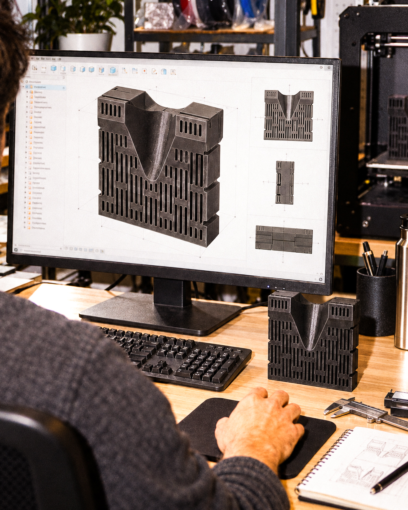
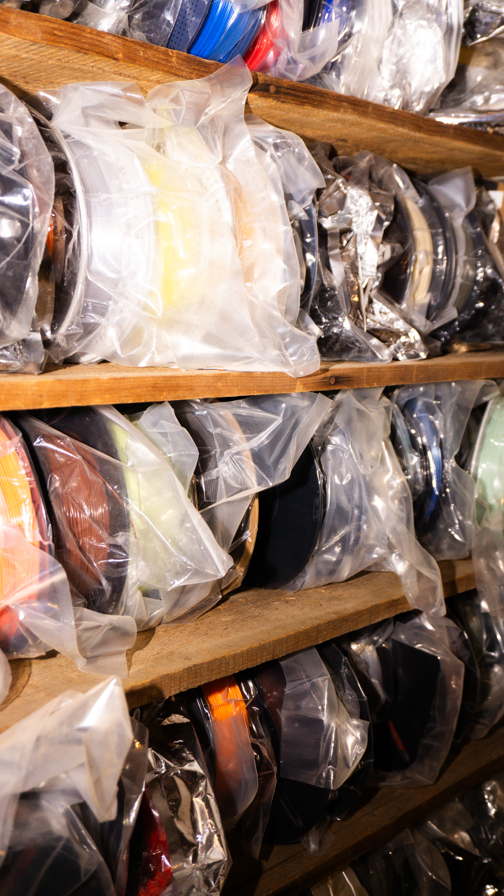
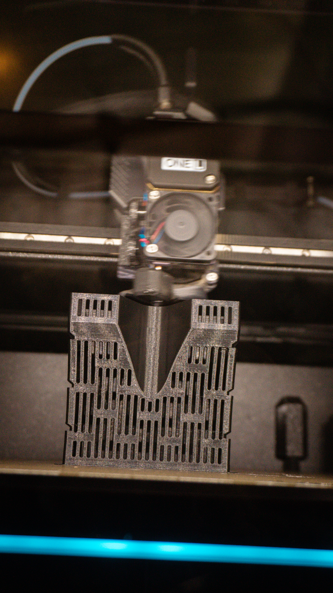
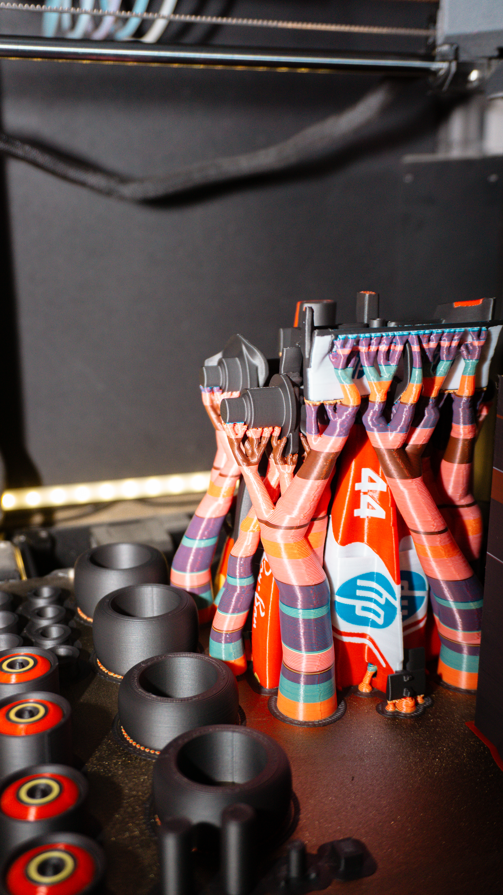
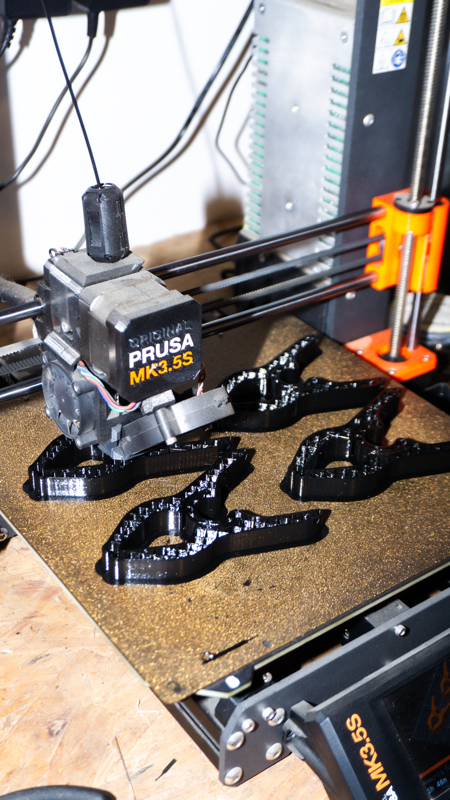
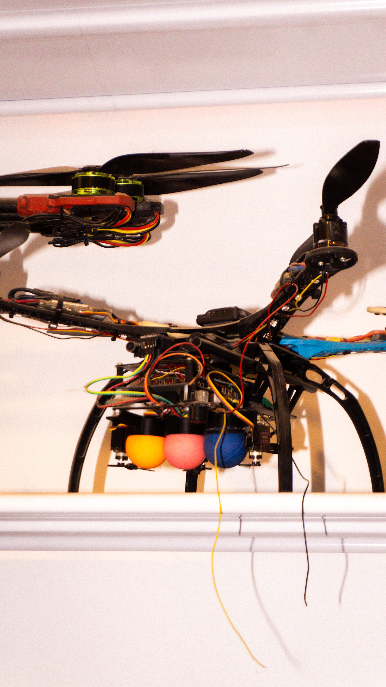

המרכז להדפסה תלת־ממדית
למהנדסים, מעצבים ויזמים.
מתכנון הנדסי ועד חלק מוגמר — פתרונות הדפסה תלת־ממדית שנבנים סביב הדרישות האמיתיות של הפרויקט.
שלחו פרויקט לבדיקה↙נותנים בנו אמוןחברות ביטחוניות, תעשייתיות וטכנולוגיות
לא רק להדפיס קובץ.
לפתור את החלק.
אנחנו מחברים תכנון, חומר וטכנולוגיית ייצור למהלך הנדסי אחד. בודקים את תנאי העבודה, מחדדים את הגאומטריה ומייצרים חלק שמתאים לשימוש שלו.
על הדרך שלנו ← ++++
++++תעשייתיות
לבחירה
ועד סדרה
בתחום
מערכת ייצור שלמה.
מהרעיון לחלק שעובד.
כל מה שצריך כדי לעבור מדרישה לחלק עובד, עם כתובת אחת לאורך הדרך.
לכל היכולות↙
תכנון ומידולמפרט, שרטוט או רעיון הופכים למודל מדויק, מותאם לייצור ומוכן לבדיקה.לעוד פרטים ↙
הדפסת FDMחלקים פונקציונליים, אבות טיפוס וסדרות קצרות במגוון חומרים הנדסיים.לעוד פרטים ↙
הדפסת MSLAפרטים מדויקים, גאומטריות עדינות וגימור חלק ברזולוציה גבוהה.לעוד פרטים ↙
חומרים וגימורבחירה לפי תפקוד, חום, עומס, סביבת עבודה ורמת הגימור הנדרשת.לעוד פרטים ↙




 ++
++
מרעיון לחלק.
ארבע תחנות.
תהליך הנדסי אחד, מהגדרת הצורך ועד לחלק שמוכן לעבוד.
- 01מבינים את הדרישהשימוש, עומסים, כמות ולוחות זמנים.
- 02מתכננים את הדרךגאומטריה, חומר וטכנולוגיית ייצור.
- 03מייצרים ובודקיםהדפסה, גימור ובקרת התוצאה.
- 04מוסרים וממשיכיםמחלק ראשון ועד סדרה חוזרת.
ההתאמה הנכונה
לכל יישום.
החלק לא מתחיל במדפסת. הוא מתחיל בהחלטות הנכונות על חוזק, גמישות, דיוק, גימור וסביבת העבודה.
MATERIAL / APPLICATION / RESULTPLA / PETGאב־טיפוס וחלקים שימושיים
ABS / ASAעמידות בחום ובסביבה
NYLONחוזק ושחיקה לאורך זמן
TPUגמישות וספיגת אנרגיה
RESINדיוק וגימור ברזולוציה גבוהה
מהנדסים.
מדפיסים.
מתקדמים.

פרטים מדויקים

מתקנים וכלי עזר

חלקים פונקציונליים
יש לכם חלק
שצריך לקרות?
שלחו קובץ, שרטוט, תמונה או תיאור קצר. נבדוק את הנתונים ונחזור עם הצעד הבא.